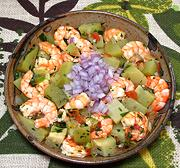

|
Shrimp with ChayoteBrazil - Camarão com Chuchu | ||||
| Serves: Effort: Sched: DoAhead: |
5 w/rice *** 1-1/2 hrs Most |
A dish from Rio de Janeiro, so famous there's a Carmen Miranda song about it. It's simple, but offers an enjoyable set of flavors and textures. See Comments for variations. | |||
|
1 ------- 2 1/4 1 1/3 ------- 7 9 2-1/4 1/4 1/4 ------- 2 2 1-1/3 1/2 |
# --- cl c t t --- oz oz # c c --- T T c t |
Shrimp -- Marinade Garlic Lime Juice Salt Pepper -- Vegetables Tomatoes Onions Chayote (1) Parsley Scallions -------- Olive Oil Olive Oil (more) Water Salt |
This recipe can be done ahead through cooking the Chayotes. Stir in the Shrimp and herbs upon reheating. Prep - (35 min - exclusive of shelling shrimp)
|
amf_smpcha1 170828 ebc96 - www.clovegarden.com
©Andrew Grygus - agryg@aaxnet.com - Linking to and
non-commercial use of this page is permitted.